Step 2: Add the ticket information¶
When you scan an unused tag number, a new ticket is created. (As seen in Step 1. Scan a tag)
The next step is to add the ticket information. Adding a customer and repairs to the ticket is required. Notes and photos can also be added, but these are optional!
1. Add a Customer¶
The first step in adding information to a ticket is adding a customer. You will see a Search by Phone field.
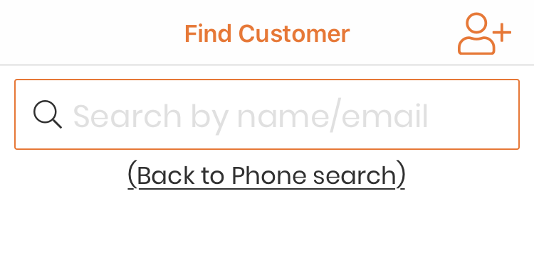{kind=link}
Start typing in the customer’s phone number. If they are in the system already, you will see their name in the search results.
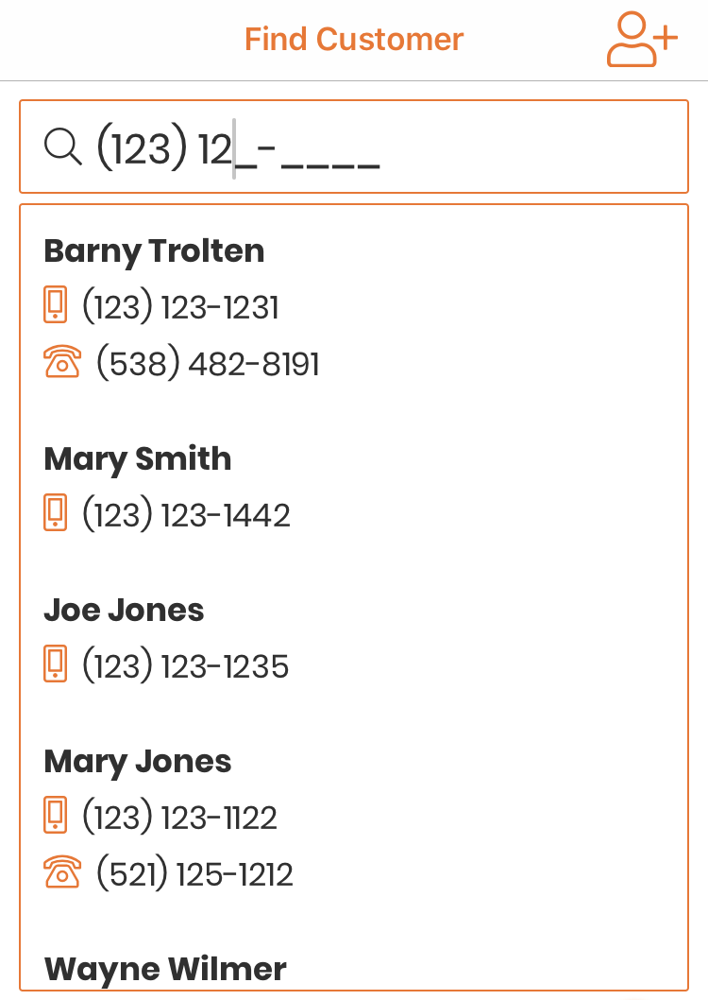{kind=link}
Tap on their name to add them to the ticket.
If you prefer, you can search for a customer by name or email.
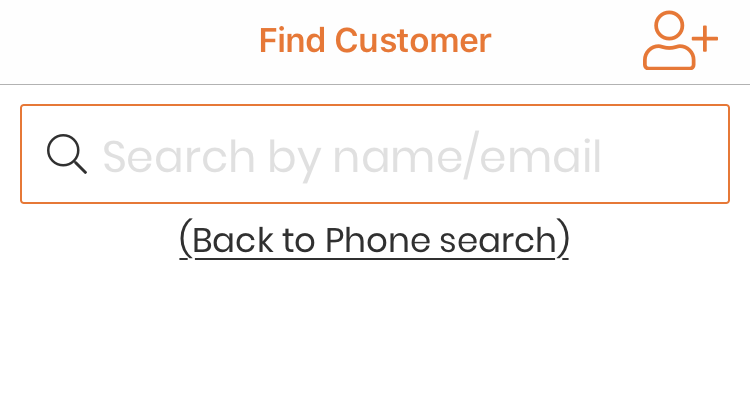{kind=link}
Tap on ‘Search by name/email instead’ and start typing the customer’s first name, last name, or email. If they are in the system already, you will see their name in the search results. Tap on their name to add them to the ticket.
Adding a New Customer¶
If this customer has not yet been entered in Repairtagger, you can easily add them now. Tap on the ‘Add Customer’ icon.
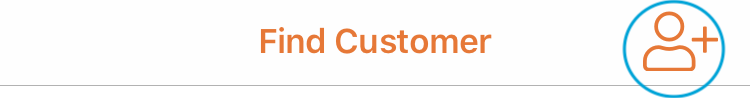{kind=link}
Note
If you tap on this by accident, simply tap ‘Cancel’ and you will be taken back to the search.
You will be shown fields to enter the customer’s information. Enter their details and tap on ‘Add this customer’.
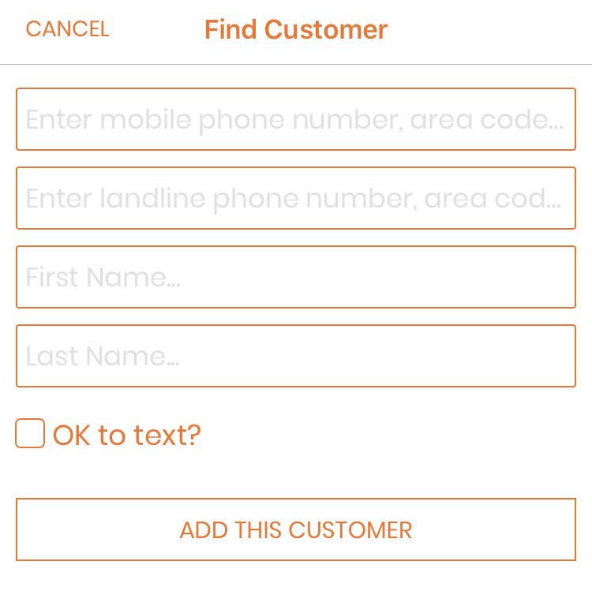{kind=link}
The customer will be created and added to the ticket.
Note
If you try to save a customer without entering an email address or a phone number, you will be shown a message. This message will inform you that the Repairtagger app will be unable to use templated notifications for that customer, and ask if you sure you want to continue without that information.
Tap on ‘I’ll add the info’ if you wish to go back and add an email address or a phone number for the customer.
Tap on ‘That’s Ok’ if this customer does not wish to be texted or emailed, and will require a phone call for a notification.
2. Add Repairs¶
When creating or editing a ticket, you will see all of your categories beneath the customer name.
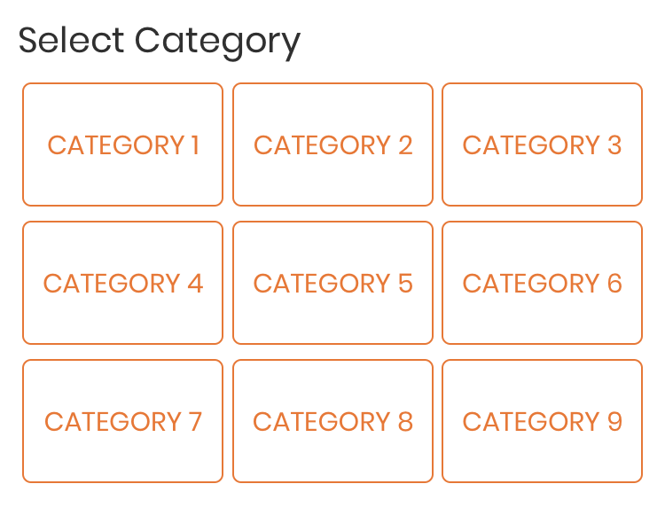{kind=link}
Note
You can add, edit, and re-order your categories and repairs in your price list. Managing your Price List
Tap on a category to show its repairs.
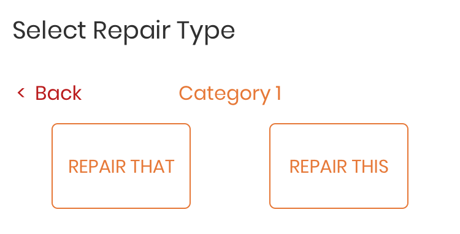{kind=link}
Tap on a repair to add it to the ticket.
Repeat the process to add more repairs.
Note
If you added a repair by accident, you can remove it in the next step.
3. Invoice¶
All repairs added to the ticket will be shown in the Invoice section.
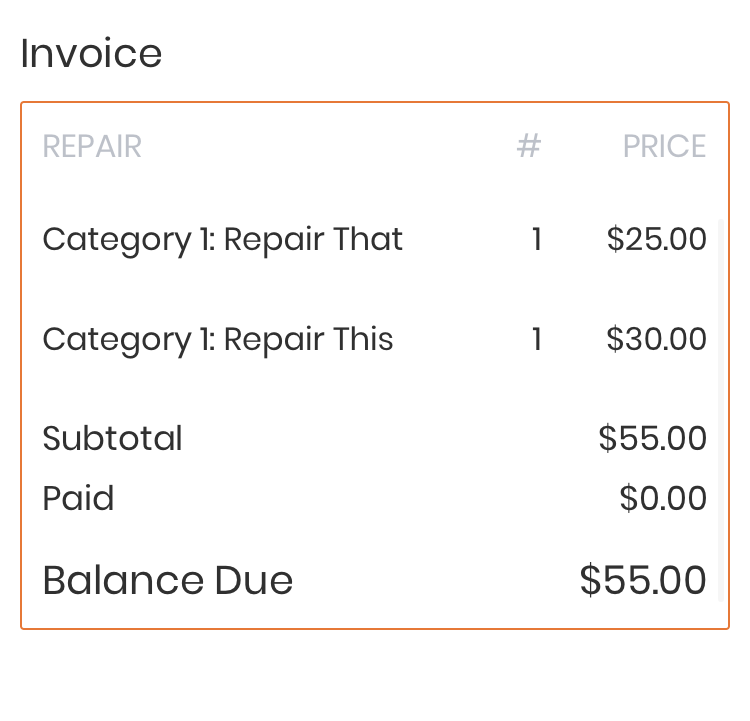{kind=link}
The ticket invoice shows how much each repair costs, the subtotal, the amount paid, and the balance that will be due on pickup, if any. To change the quantity or price of a repair, tap on the repair in the invoice.
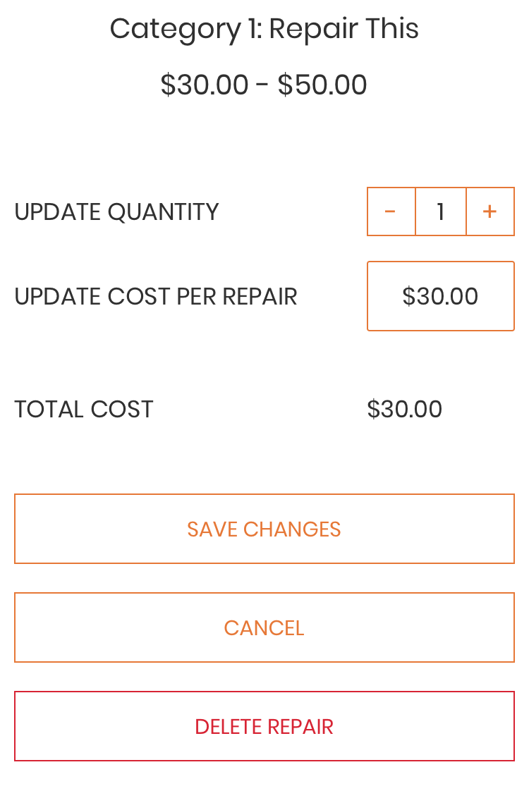{kind=link}
You will be able to add more of the same repair, change the price, or delete the repair from the ticket. The price is set per repair, so if you want to add 3 of the same repair to a ticket, and they each will cost $15.00, the price will be set to $15.00. The app will calculate the subtotal for you.
Tap on ‘Save Changes’.
If you take payment up front or a deposit, you can indicate how much the customer has already paid. In the Invoice, tap on ‘Paid’
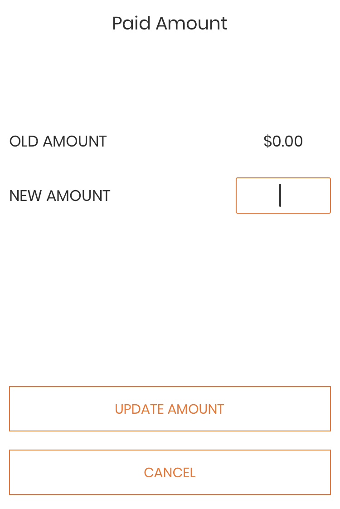{kind=link}
Type in the amount paid. If it is less than the ticket subtotal, the ticket will be marked as Balance Due. The amount due will be shown when the customer comes to pick up their item, and the ticket will be shown with a red dollar sign icon.
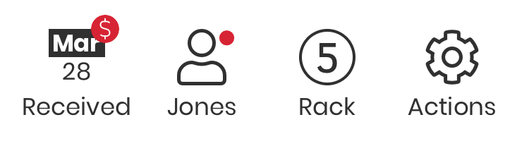{kind=link}
If the ticket is paid in full, it will be marked as such, and shown with a green dollar sign icon.
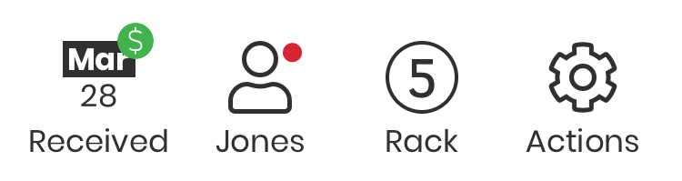{kind=link}
Optional: Add Notes and Photos¶
Notes¶
Warning
The notes are the only step of creating a ticket that require you to save your work!
The notes section should be used to add any additional information that you need for the ticket. Tap in the ‘Notes’ field to start typing. Once you have finished entering your notes, click on the ‘Save Notes’ button that appears beneath the field.
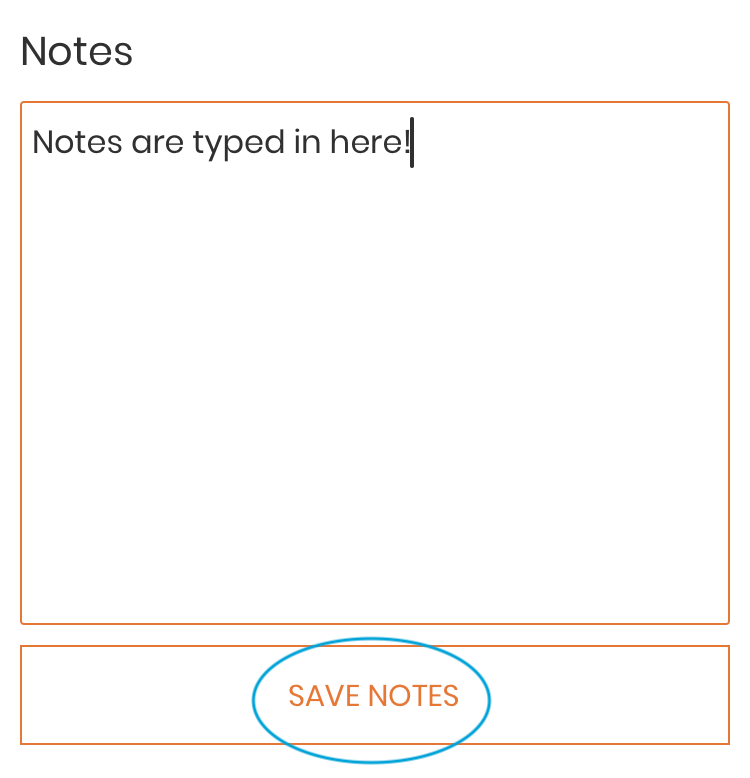{kind=link}
Photos¶
To add a photo to a ticket (for example, if you wish to have a record of the condition the item was in when it was dropped off), tap on the ‘add image’ icon.
{kind=link}
Your device camera will open. Click the shutter button to take a picture. If you are happy with the image, click on ‘Use Photo’, otherwise click on ‘Retake’ to retake the picture. The ‘add image’ will be replaced with the thumbnail while the image uploads.
As soon as the upload is complete, the ‘add image’ icon will be shown again, and another image can be taken. Thumbnails will appear to the right of the icon.
Note
Photos will occasionally take a little while to upload to the server. Do not worry if you do not see the uploaded photo right away!